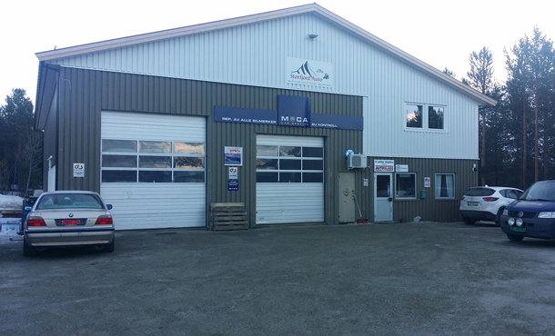

Storfjord Auto AS
Storfjord Auto AS er en del av MECA sin kjede av verksteder som utfører service og reperasjoner på alle biler samt bobiler under 3 tonn. For mer informasjon kan du lese det på Tjenester.
Verkstedet har 4 ansatte, 2 mekanikere og 2 bilopprettere. For mer informasjon om selve bedriften så kan du lese det på Om oss.
Vi sikter hele tiden mot høyere kvalitets- og miljømål
For oss er det en selvfølge å etterstrebe å bli bedre hele tiden. Derfor arbeider vi systematisk med å finne nye og bedre løsninger for kundene, både i dag og i fremtiden. Vi prioriterer kompetanseutvikling så vel som kontinuerlig utvikling av nye tekniske og logistiske løsninger og forretnings modeller. Samtidig er det viktig for oss å være en arbeidsplass der mennesket står i sentrum og kan utvikles.
ISO 14001 betyr at vi tar miljøarbeidet på alvor
Miljøspørsmål har alltid ligget MECA-konsernets hjerte nær. Både kunder, medarbeidere og myndigheter skal kunne stole på at vi oppfyller de miljøkrav som stilles, og vi etterstreber alltid å arbeide med så liten innvirkning på miljøet som mulig. MECA Scandinavia AB og dets datterselskaper er miljøsertifisert i henhold til ISO 14001. Det innebærer at selskapenes miljøstyringssystem oppfyller kravene i den internasjonale standarden og at det pågår et aktivt arbeid for å redusere miljøpåvirkningen. Selskapet har i løpet av en toårsperiode systematisk gjennomgått og tilpasset virksomheten etter standardens samtlige ulike krav. Som et ledd i vårt miljøarbeid tilbyr vi også våre kunder flere ulike løsninger når det gjelder håndtering av miljøfarlig avfall.
